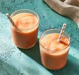

Batida de lechosa es una de las recetas más populares de nuestro blog, y una de las bebidas más populares de la República Dominicana. Si alguna vez la has probado, seguro que no necesitas convencerte. Date prisa y sírvete un vaso de esta maravilla helada y cremosa.

Ingredientes
3 tazas lechosa, (papaya) cortada en cubos
1 cucharadita extracto de vainilla
3 tazas hielo
1 litro leche evaporada
1 taza azúcar, (podrías no usarla toda)
Pasos
Pon los cubos de lechosa, vainilla, hielo, leche evaporada y la mitad del azúcar en la batidora y licúa a alta velocidad hasta que el hielo se haya licuado.
Prueba y añade más azúcar si lo encuentras necesario, licua unos segundos más hasta que tenga una consistencia sedosa.
Sirve de inmediato, una vez licuada se pondrá amarga cuando empiece a calentarse un poco.
Esta receta fue copiada de la página www.cocinadominicana.com”